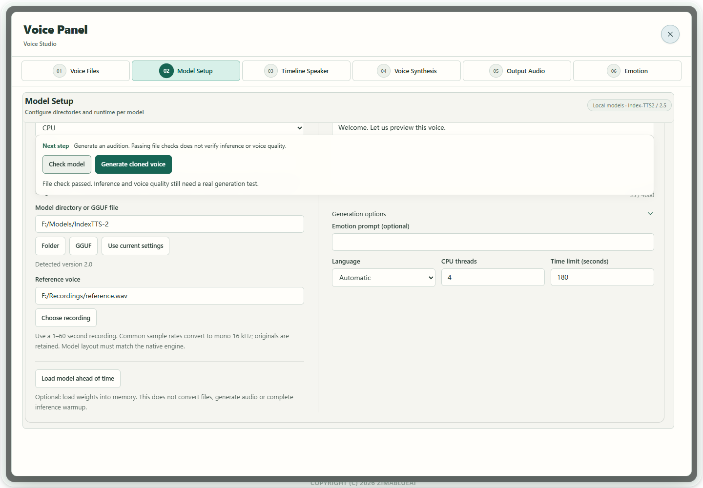
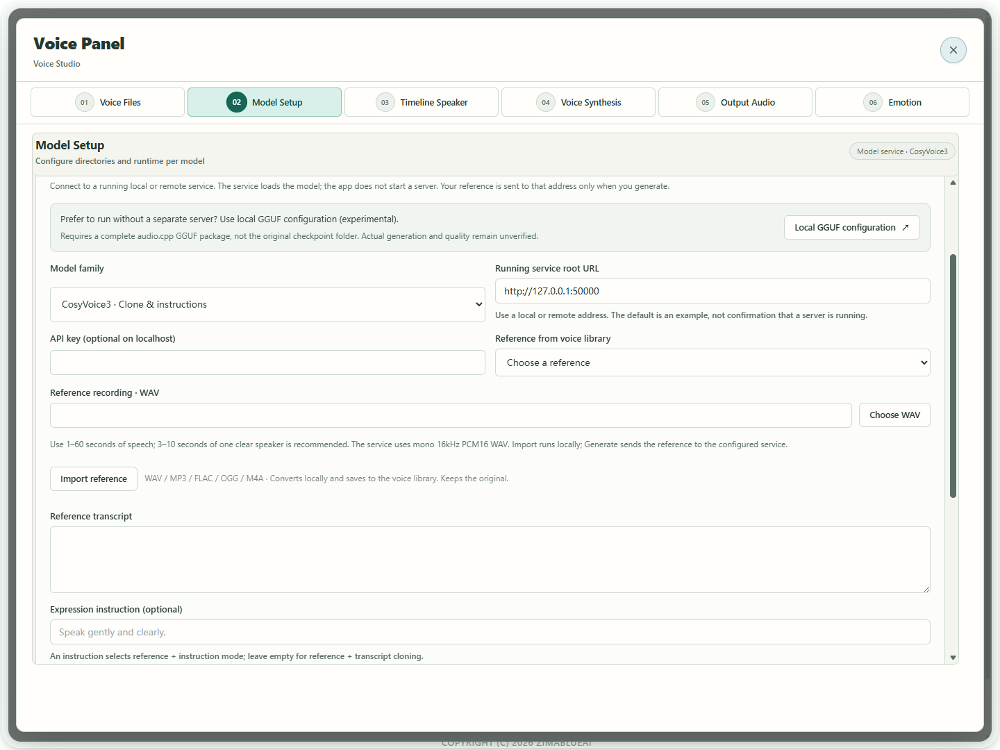

Scenario guide
Keep the voice, adjust expression
Compare takes with identical text and change only supported expression controls.
What you will get
Create a neutral take and an expression-adjusted take, then keep the result you prefer.
Before you start
- Complete one cloning audition first. Keep model, reference, text and language fixed for a useful comparison.
- Index uses an Emotion prompt; CosyVoice instruction mode uses an Expression instruction; Fish uses inline expression tags. Do not apply Index parameters to Vox, FireRed or VibeVoice.
- Continue this guide to adjust the expression of synthesized speech. To analyze an existing recording, open Voice Tools → 06 Emotion, or select Analyze a recording for instructions. Analysis requires a compatible ONNX export with the nine-label classifier; source checkpoints and feature-only ONNX models do not substitute. Results do not automatically change cloning settings or meeting labels. Comprehensive expression-following and voiceprint quality acceptance remain incomplete.
Step by step
- 01
Generate the baseline and keep take A
Follow the cloning guide and generate a short passage without added emotion. After listening, keep the result as A in A/B voice comparison. Download or save it for long-term storage; comparison takes are retained only for this app session.

Actual app UI · Select to enlarge; example data is not your result - 1Check and generate stay above the editing area.
- 2A file check does not prove voice quality.
- 02
Index: expand generation options for the emotion prompt
Keep text and reference unchanged. Expand Generation options, enter the delivery in Index's Emotion prompt (optional), then use Generate cloned voice in the action area above the editor and keep B. Do not put the emotion prompt in Reference transcript. Scroll to the option when needed; generation, cancellation and status remain above. If you also replace the reference, inspect it before generating B and do not treat the two reference conditions as a matched A/B pair.
Actual app UI · Select to enlarge; example data is not your result - 1Check and generate stay above the editing area.
- 2A file check does not prove voice quality.
- 03
CosyVoice/Fish: use their own expression format
For a running CosyVoice server, choose its instruction-capable cloning mode and describe the delivery or pace. In Fish, use Insert expression tag, for example [whisper] or [excited], in synthesis text rather than the reference transcript. The server must support that mode; connection alone does not establish expression following.

Actual app UI · Select to enlarge; example data is not your result - 1Open local GGUF configuration for the matching model without a separate server; generation remains unverified.
- 2Choose the model loaded by your server.
- 3Enter the running local or remote server address; the default is only an example.
- 4Choose a reference; only Generate sends it to the configured service.
- 04
Compare A/B and save after review
Switch between A and B with identical text. Check pronunciation, voice consistency, suitable expression and changed pauses. Reduce an excessive or unsuitable prompt and retry. Different waveforms do not prove correct emotion. Save the preferred B and retain the baseline.
Actual app UI · Select to enlarge; example data is not your result - 1Check and generate stay above the editing area.
- 2A file check does not prove voice quality.


How to verify success
Both takes play, your listening comparison identifies the better delivery, and saved files and parameters are traceable.
If something goes wrong
The emotion control is unavailable
Check the expression format supported by this backend. If the field is absent or disabled, use the model's supported instruction or tag route instead of treating unrelated parameters as emotion controls.
No audible change / voice drift
Keep the unsuccessful take, reduce or revise the prompt and retry with fixed reference and text. Evaluate each take; effectiveness is not guaranteed across all languages or emotions.